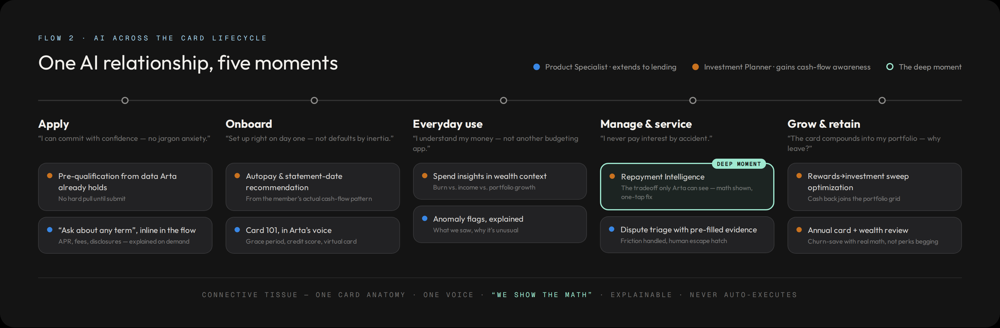

The Arta Card
Extending the wealth relationship into everyday liquidity.
Designing a portfolio-secured charge card for Arta members — and the platform behind it.
The brief became more interesting once the product model was clear
Launch the Arta Card
Design a smooth application experience, an AI relationship across the card lifecycle, and a model that can extend to partner brands.
A portfolio-secured charge card
Existing Arta members already have a verified relationship, and eligible custodied assets can inform prequalification and the recommended limit.
This isn't a cold-start credit relationship
Arta already knows who the member is, holds part of their financial context, and may hold the assets supporting the card.
So the opportunity isn't to make a traditional card application prettier.
It's to design credit around an existing wealth relationship.
The boundaries I designed within
Existing, KYC'd Arta members
I designed for members with an established Arta relationship rather than a cold-acquisition journey.
Singapore-first working assumption
I used Singapore as the launch market and the HSBC Singapore form as the reference for information and disclosure scope. Exact regulatory requirements would be validated with Legal and Compliance.
Portfolio-secured charge card
Eligible custodied assets and the existing Arta relationship can inform prequalification and the recommended limit. Portfolio use is explicit and member-controlled.
Mobile-first, inside Arta
The launch experience lives inside the existing Arta app. I designed for both instant decisions and cases that require additional review.
I grounded the design in Arta's original customer thesis
Successful professionals in the wealth gap
Arta's founders described an underserved group of professionals who are doing well, but are not yet at the level where a private bank or family office serves them well.
NOT MASS MARKET → NOT ULTRA-HNW →
EMERGING / ESTABLISHED WEALTH
Digital-native professionals hitting their financial stride
Arta specifically called out professionals in their 30s and 40s across technology, consulting and finance.
TECHCONSULTINGFINANCE
Income alone may not tell the whole story
Arta has also described members with significant employer-stock exposure and concentrated positions — particularly in technology.
SALARY + COMPANY EQUITY + INVESTED ASSETS
↓
FINANCIAL CAPACITY ≠ PAYCHECK ALONE
I shouldn't design Arta Card for a generic credit-card applicant.
I should design for members whose wealth may sit in assets, equity and investments — not only salary.
From Arta's audience thesis to two design archetypes
Scope choice: I considered a broader HENRY audience, but designed only one primary journey and one meaningful stress test to preserve depth.
One represents the core audience I found in Arta's public positioning. The other is deliberately constructed to stress-test where that model becomes difficult.
↓ DESIGN TRANSLATION ↓
CORE REALITY · EQUITY-RICH OPERATOR → REMOVE FRICTION EDGE REALITY · LUMPY-INCOME FOUNDER → TEST THE LIMITS
The Equity-Rich Operator
How much friction can Arta remove because it already knows the member and their assets?
The Founder with Lumpy Income
Where can portfolio context complement traditional evidence — and where must Arta fall back to review?
One design question guided the work
The tension is the point: reduce friction — but never by reducing transparency. Three principles operationalize it, and each one owns a section of this deck.
How might we use Arta's existing member and portfolio relationship to remove unnecessary friction from credit — without removing transparency or control?
Don't ask twice
Reuse verified member and portfolio context wherever it is safe and appropriate.
Explain before acting
Make consequential decisions understandable, and keep the member in control.
Keep trust in the core
Let partners own the brand expression while Arta protects decisioning, compliance, security and AI guardrails.
I spent the 5 hours where the product risk was highest
Frame the product
Clarifications · assumptions · success criteria
Audit the existing experience
Arta product language · HSBC disclosure scope · system gaps
Solve the highest-risk flow
Application · disclosures · decision states
Define the AI relationship
Lifecycle map · one deep moment · guardrails
Prove it can scale
White label · component & token model
Edit the story
Tradeoffs · cuts · presentation
Rewards catalogue · full transaction management · disputes · desktop/web · supplementary-card flows
Confirm what Arta knows. Collect only what credit needs.
- Arta already KYC'd this member — the flow confirms what Arta knows and asks only what credit still needs. Most of the application is confirmation; additional verification appears only when needed.
- One application, adaptive friction: the rules stay consistent — the two members branch only where the evidence differs, and at the decision.
- Honesty is the premium experience: key economics appear before commitment; full terms appear before submission.
Every screen ahead is the live prototype, embedded.
OPEN THE LIVE PROTOTYPE ↗Entry & confirming what Arta knows
Income is sensitive. The explanation shouldn't be optional.
Arta knows who you are. Singpass proves what you earn. SG-market pattern — exact Myinfo attributes and consent scope would be confirmed with Compliance.
- One question per screen — "Used only for this application. Never shown in your profile."
- Ask with context, not suspicion: "Income forms part of the assessment. Your eligible Arta assets may also support your available limit."
- Singpass, when the member chooses it: retrieve the IRAS Notice of Assessment via Myinfo — verified in ~30 seconds, decision today. The consent sheet shows exactly which fields, before authorising.
- Adaptive friction, member-controlled: the same person can pick verify-now or upload-and-review — the evidence path changes, the rules never do.
- No mid-form rejection: anything unresolved routes to review, never to a dead end.
Make the security and settlement mechanics explicit
Pay-in-full monthly · the security arrangement · what happens if values fall — always expanded, structure compliance-locked. Hard-pull consent in plain language. Exact eligibility, rates and security terms sit with Credit, Risk and Legal — the prototype says so on screen.
The decision is a relationship moment
Five governed states — approved · phased limit · more info · additional review · declined. The persona changes the evidence path, never the rules — and a declined applicant is still a wealth member tomorrow.
One AI relationship, not five features
The card gives Arta AI the one signal it never had — cash flow. Arta saw what you own; now it sees how money moves. Every touchpoint extends an agent Arta already has, and one moment is deliberately chosen for depth.

Deep moment: repayment intelligence — three realities, one anatomy
"What if markets move?" reprices her limit live — headroom transparency only a portfolio-secured card needs; "Why am I seeing this?" lists sources, calls itself arithmetic, and hands over the off switch.
The core embeds. The shell is the partner's.
The line is enforced by the token pipeline, not by review: a partner theme that re-points a decision color to its brand pink fails the build. One chain: #a8cdf0 → ref.color.sky.40 → sys.action.primary → cmp.btn.primary.bg — Arta is simply theme #1.
The partner owns the relationship and the surrounding product shell; Arta protects the integrity of consequential financial decisions.
Relationship & shell
App navigation & entry point · brand identity, typography & color · card artwork · product naming · benefit presentation · tone of voice · support entry point.
Styled, within floors
Component styling · illustration · AI surface name · notification styling · explanation wording · information density · application entry point — each with a minimum the build enforces.
Consequential decisions
Eligibility & decisioning · eligible-asset logic & limit recommendation · required data model · compliance & disclosure hierarchy · consent & audit trail · security & authentication · AI safety boundaries · critical application states · card servicing.
Partner app shell → Partner-configurable experience → Arta-controlled card capabilities → Decisioning, compliance & servicing
LIVE STORYBOOK — 3 THEMES, GOVERNANCE STORIES ↗Same bones, partner skin
Two fictional partners (Meridian, Northstar) prove the pipeline inside a partner-owned shell: the Arta core modules are identical everywhere — everything around them belongs to the partner.
What's limiting in Arta's design system
And because a critique should be constructive: the missing layer now exists — 151 ref / 117 sys / 123 cmp tokens, the lending components, and three themes, running in a validated pipeline.
Gradients ≠ forms
Aurora surfaces fight data entry. Reserve them for moments — approval, card art — and add a quiet form surface.
No legal type style
Letterspaced caps micro-labels fail for disclosures. Lending needs a readable legal/tabular style.
Missing primitives
Dense inputs, chapter progress, currency input, consent rows, status timeline, document upload, decision states.
If I had more time
- Usability pass on the income & consent steps — comprehension testing on disclosure copy.
- Card management & servicing surface — statements, disputes, freeze; same DS additions carry over.
- Partner theming console — how a partner actually edits tokens with compliance-locked regions.